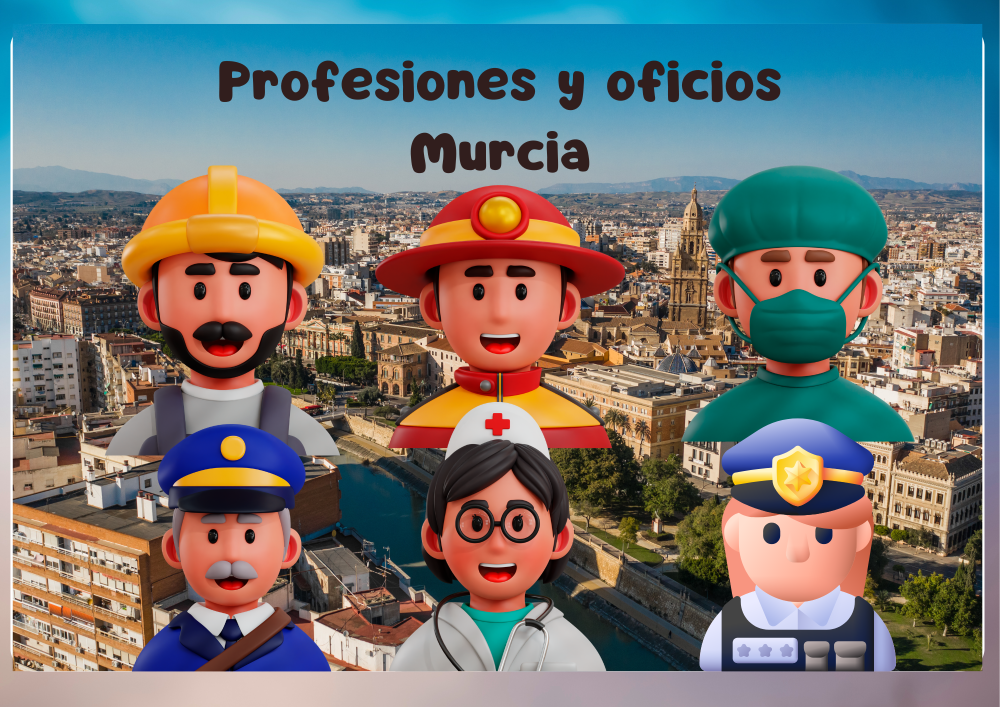

Las profesiones.
Guía docente
Sesión 12/05 al 24/05
Está relacionada con la temática de las profesiones, oficios. Se lleva a cabo para desarrollar el componente del lenguaje léxico-semántico. Dirigida para alumnos de CEIP primaria escolarizados en un aula abierta con un nivel de competencia curricular de 1º ciclo EP.

Competencias clave
- Competencia en comunicación lingüística. Se refiere a la habilidad para utilizar la lengua. Se desarrollarán actividades que faciliten la intención comunicativa y la generalización en todos los contextos del niño.
- Competencia digital. Implica el uso de las TAC para obtener, analizar, producir e intercambiar información.
- Competencia personal social y de aprender a aprender. Organizar sus tareas y tiempo, y trabajar de manera individual o colaborativa para conseguir un objetivo. Po medio de las auto instrucciones.
Objetivos
● Aprender vocabulario básico de las diferentes profesiones y oficios, herramientas utilizadas y lugares de trabajo.
● Consolidar la autonomía y ámbitos comunicativos- lingüísticos.
● Favorecer actividades interactivas a través del uso de las TAC que faciliten la intención comunicativa y el juego reglado.
● Conocer el rol que desempeña cada profesional.
Saberes básicos
1.º ciclo de Primaria B. Comunicación
Alfabetización mediática e informacional: estrategias elementales para la búsqueda guiada de información.
-Tipologías textuales. Procesos
-Interacción oral
-Escucha activa.
- Narración
- Estrategias de comprensión lectora.
Metodología
Para la intervención con el alumno el Real Decreto 157/2022, de 1 de marzo, establece la inclusión del modelo de Diseño Universal para el Aprendizaje, "Garantizar una escuela inclusiva que entiende que es el currículo el que debe adaptarse al alumnado y no al revés.
Se propiciará el aprendizaje basado en proyectos (ABP) El ABP permite al alumnado adquirir los conocimientos, las competencias para resolver problemas o elaborar un producto final.
Por último, se llevarán a cabo acciones relacionadas con la gamificación que, a pesar de no ser una metodología en sí, es una estrategia que traslada la mecánica de los juegos a la educación.
Metodología específica:
- Método TEACCH: A través de actividades y uso de materiales que faciliten el desarrollo del trabajo autónomo y estructurado con un inicio, desarrollo y final.
- Proyecto PEANA: Utilizando su agenda personal en los momentos que sea necesario y la estructuración del ambiente en el aula abierta.
Evaluación y criterios de evaluación
Entre los distintos procedimientos de evaluación que utilizaré destaco los siguientes.
- Observación directa del alumno y de su contexto:
- Técnicas audiovisuales. Vídeo, fotos y grabaciones.
- La autoevaluación se realizará, por medio de la utilización de pictogramas.
Para realizar la evaluación hemos utilizado los siguientes instrumentos: Escala de estimación, ficha de control diario, formato de autoevaluación.
Criterios de evaluación
3.2. Participar en interacciones orales espontáneas o regladas utilizando estrategias básicas de escucha activa.
4.1. Comprender el sentido global y la información relevante de textos sencillos, escritos y multimodales.
6.2. Compartir los resultados de un proceso de investigación sencillo, individual o grupal, sobre algún tema de interés personal o ecosocial, realizado de manera acompañada.
Obra publicada con Licencia Creative Commons Reconocimiento Compartir igual 4.0